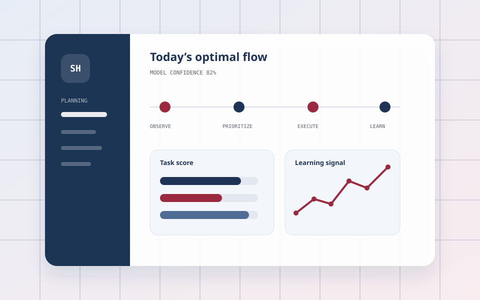
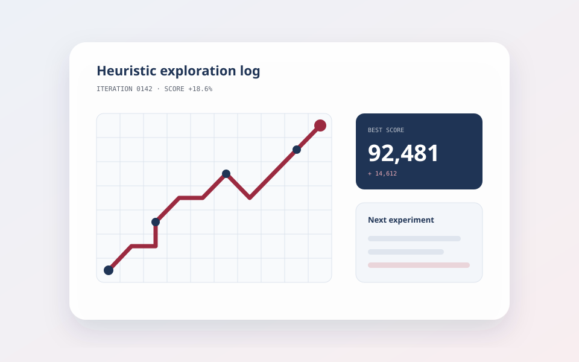

第3回国際原子力科学オリンピック
日本代表Algorithm · Science · Creation
アルゴリズムと科学を、
考えて、試して、形にする。
競技プログラミング・競技数学・原子力物理を軸に、複雑な問題を構造化し、実装可能な形へ落とし込むことに取り組んでいます。
日本言語学オリンピック
金賞AtCoder Junior League 高1 Heuristic
準優勝01 / Selected Work
考えたことを、動く形へ。
完成したものだけでなく、検証中のアイデアや学習の過程も含めて紹介します。

PrototypePROJECT 01
Behavior-driven Scheduler
重要度・期限・行動実績などのフィードバックから、実行しやすいスケジュールを学習・生成するプロトタイプ。入力、提案、実行、再学習の循環を設計しました。
Concept & Prototype
GrowingPROJECT 02
AHC Memo
AtCoder Heuristic Contestで得た発想、実験方法、改善パターンを蓄積するためのノート。再利用できる探索の型へ整理していきます。
RepositoryPROJECT 03
Shymohn Portfolio
作品と実績が短時間で伝わるように、情報設計・ブランド表現・アクセシビリティ・表示速度を見直した、このポートフォリオ自体の改善プロジェクトです。
Repository02 / About & Focus
境界をまたいで、
問題の本質を探す。
Shymohnという名前で、アルゴリズム・数学・科学の領域を中心に活動しています。
難しい問題に出会ったとき、まず構造を見つけ、小さく実験し、結果から次の一手を考える。その繰り返しを大切にしています。競技で培った思考を、ツールや表現として人に伝わる形へ変えていくことが目標です。
Competitive Programming
高速な実装と厳密な検証を重ね、制約の中で最善の戦略を組み立てます。
Mathematical Thinking
条件を整理し、見えない規則を言語化して、複雑な問題を扱いやすくします。
Scientific Exploration
仮説と観察を往復し、物理現象をモデルとして理解することを楽しんでいます。
03 / Achievements
挑戦の記録。
科学・数学・言語学・プログラミング。それぞれの競技で得た視点が、次の挑戦につながっています。
- 2026SCIENCE
第3回国際原子力科学オリンピック サウジアラビア大会
日本代表
- 2026CODE
DISCO Equipment Coding Contest
Finalist
- —LINGUISTICS
日本言語学オリンピック（JOL）
金賞
- —LINGUISTICS
アジア太平洋言語学オリンピック（APLO）
出場
- —HEURISTICS
AtCoder Junior League 高1 Heuristic部門
準優勝 · 学校ランキング5位
- —CODE
パソコン甲子園 プログラミング部門
新人賞
- —SCIENCE
広島県科学オリンピック
銀賞
- —RESEARCH
情報科学の達人
7期生 採択
04 / Links
Find me online.
コンテストの記録、コード、日々の活動はこちらから。
05 / Next
次の問いを、一緒に考える。
制作、競技、研究についての連絡はGitHubまたはXからどうぞ。